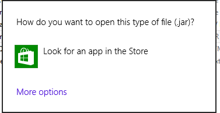
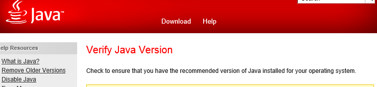
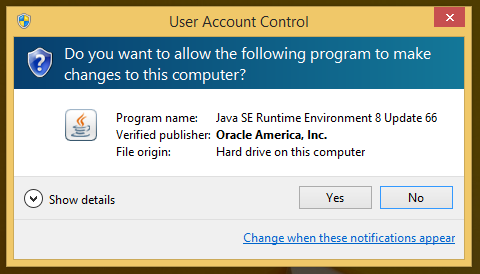
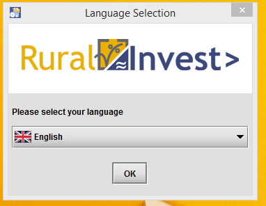
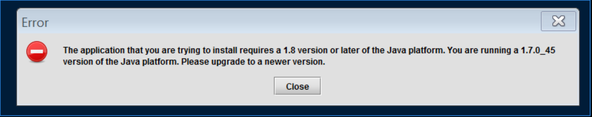

In order to install correctly please follow the instructions below.
Administrator privileges are necessary for installing RuralInvest. If you do not have admin rights on your machine, please ask your administrator to run the installer. Note that after installation, only user-level privileges are necessary to use RuralInvest.
Make sure that you copy the installer files to your computer (the desktop is fine) before installing. If installing from a .zip file, extract the files before continuing.
Install RuralInvest by double-clicking the file "install-RuralInvest.jar".
If the following message appears, you need to install Java before continuing.

In that case, go to the "jre" folder and double-click "jre.exe" to install Java.
Upon completion, you may be prompted to verify Java: it is not necessary to actually do so and you may close the window.

At this point, install RuralInvest by double-clicking the file "install-RuralInvest.jar" and proceed.
If you see the below message, choose "Yes" to continue the installation.

You will then see the following window. Choose the most convenient language, click "OK", and follow the instructions.
The window may appear behind other windows that are already open. You may need to minimize or close other windows to see it.

If the following message appears, you need to upgrade Java in order to install RuralInvest.

In that case, go to the "jre" folder and double-click "jre.exe" to upgrade Java.
Upon completion, you may be prompted to verify Java: it is not necessary to actually do so and you may close the window.
At this point, install RuralInvest by double-clicking the file "install-RuralInvest.jar" and proceed.
After installing, if your browser opens in full-screen mode and you would like to minimize it, use "Window key"+D.